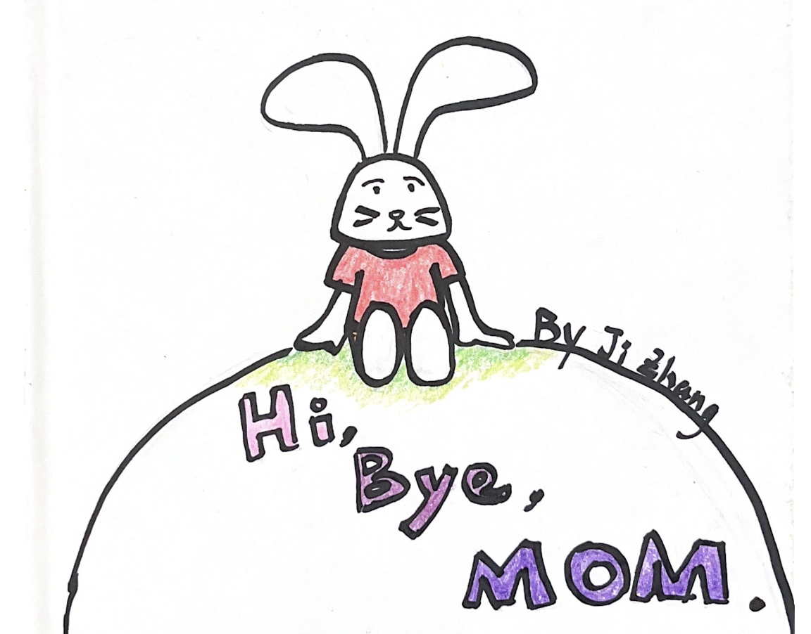

Children's Book Design
Overview
This is a picture book that represents something about myself and my distinctive past, inspired by Maurice Sendak, the author of Where the Wild Thins Are. Hope you enjoy it!
The Book
Click on the cover of the book to read it! 
Some Notes
My parents have always refused to tell me what death is. They would use “sleeping” and “having a long trip” to gloss over death. I still have this blurry memory of my first pet. It was a white small rabbit. Its ears and nose were black and it liked to eat carrots. We kept it in a cage in our yard. I spent a summer with it and thought it would be with me forever. On one cold morning, I checked the rabbit’s cage before I went to school but found it had curled itself in the corner and was not eating any of the carrots. My parents told me the rabbit was asleep and rushed me to school. When I got back home, they told me the rabbit broke through the cage and ran away. I cried because I felt betrayed. I blamed myself for not loving my pet enough. But now, when I look back to this memory, I think the rabbit probably died from the cold.
Learning from this experience, I want to be as honest as Sendak is with my audience, the children, about death. Death is not something that should be a taboo to them. It’s not a word that parents should be ashamed to talk about. It’s more heartbreaking to know that someone is going on a trip and will never be back than to know someone is dead.